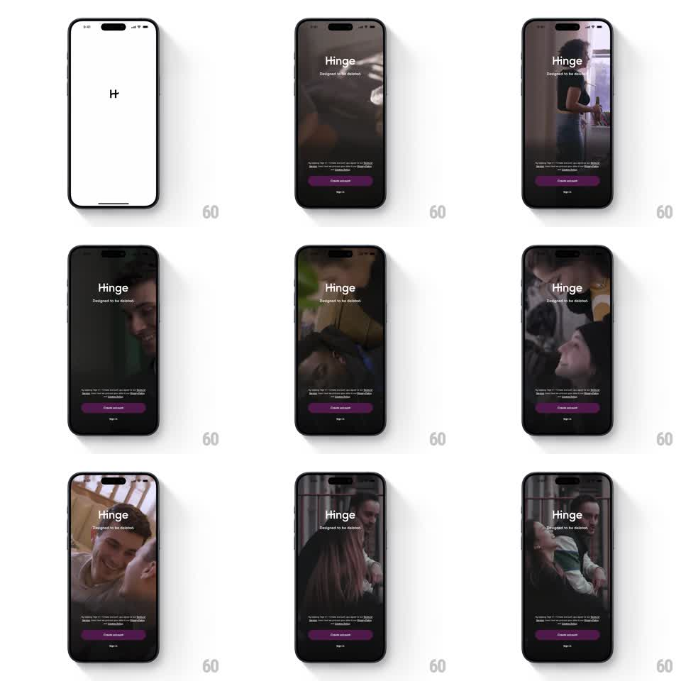

Media
Frame-by-frame

Rebuild this animation 1:1: Hinge's onboarding splash - a black "H" logo on white gives way to an atmospheric full-screen background video of couples (dates, laughter, city moments) cross-fading in a loop behind the static "Hinge / Designed to be deleted." lockup, legal line, purple "Create account" button, and "Sign in" link.

Rebuild this animation 1:1: Hinge's onboarding splash - a black "H" logo on white gives way to an atmospheric full-screen background video of couples (dates, laughter, city moments) cross-fading in a loop behind the static "Hinge / Designed to be deleted." lockup, legal line, purple "Create account" button, and "Sign in" link. ## Integration Integration: stack-agnostic spec - springs given as stiffness/damping, timed motions as duration + curve; map every value to your framework and animation library of choice. ## Scene Frame 1: white splash, centered black "H" mark. Main state: full-bleed video of couples in warm, dim, cinematic tones; centered white "Hinge" wordmark with "Designed to be deleted." tagline; bottom stack has the terms line, a filled purple "Create account" button, and a "Sign in" text button. ## Motion spec Pattern: ambient background video loop behind static UI. - Splash handoff: white splash holds ~600ms, then the video fades up from black (600ms) as the UI elements settle in with a gentle stagger (wordmark, tagline, buttons; 120ms apart, 300ms each, ease-out). - Video loop: clips cross-fade every ~2.5s (800ms dissolve); each clip holds a slow push-in (scale 1 -> 1.05 over its dwell). - UI: fully static after entrance - no parallax, no pulsing. ## Calibration - Dissolves only; hard cuts between clips break the mood. - Keep the video dark enough that the white wordmark and purple button stay the brightest elements. ## Reduced motion Use the first frame as a static poster; no clip cycling or push-in. ## Don't miss - The tagline "Designed to be deleted." is part of the lockup - never drop it. - The CTA is purple, not the brand-black; "Sign in" is a plain text link under it.